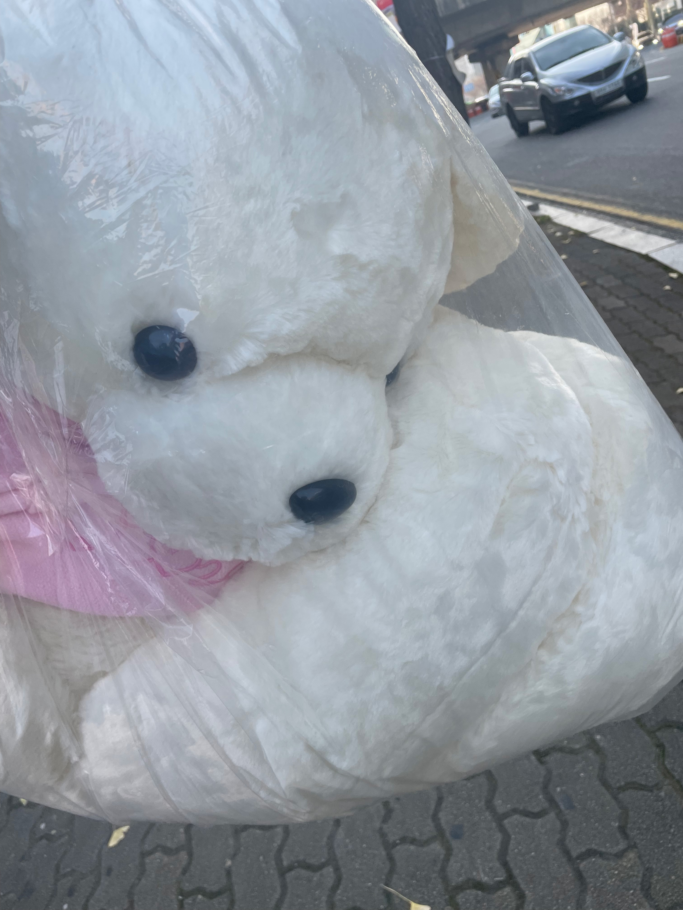
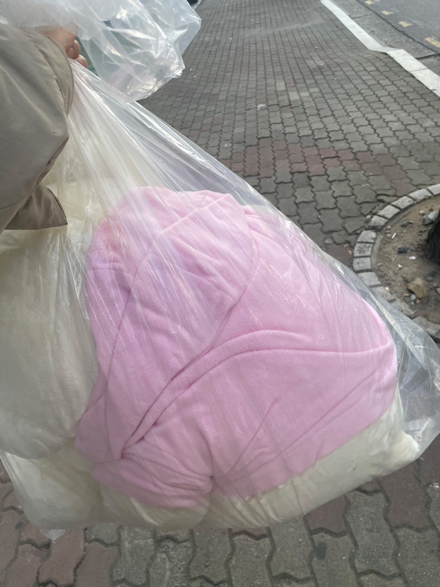
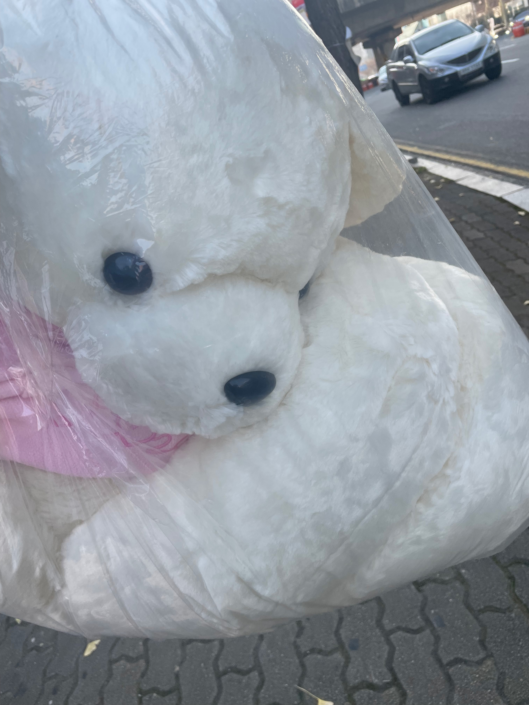
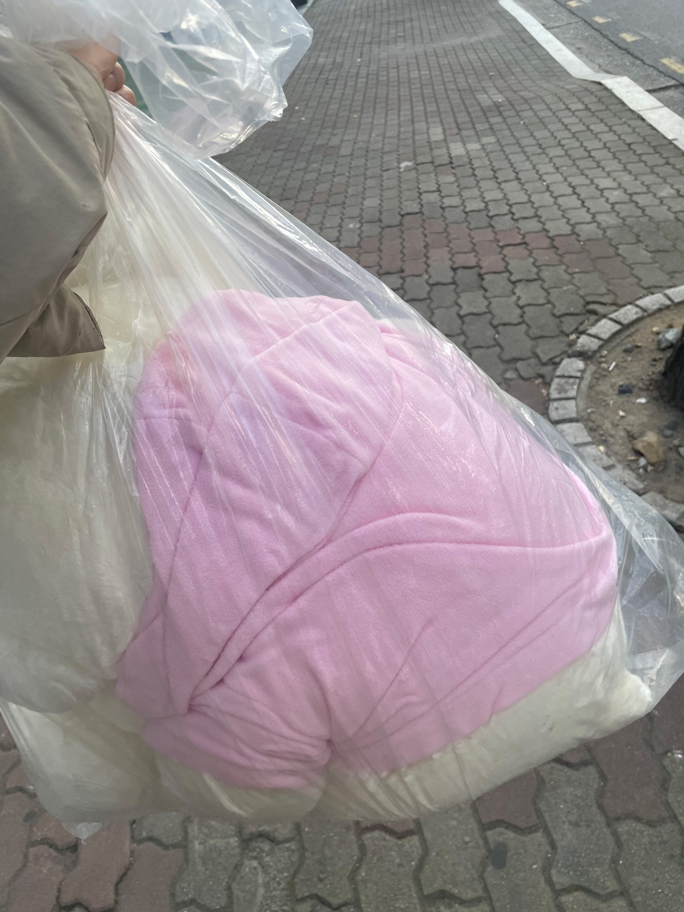
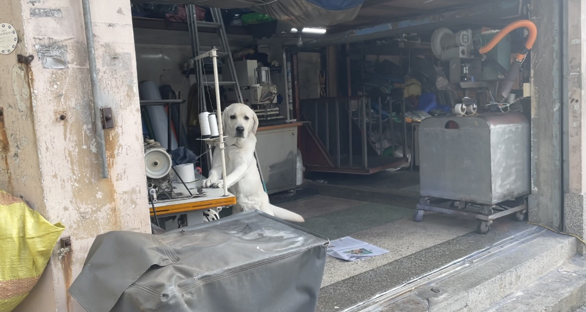
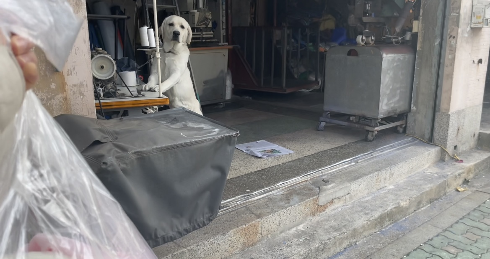
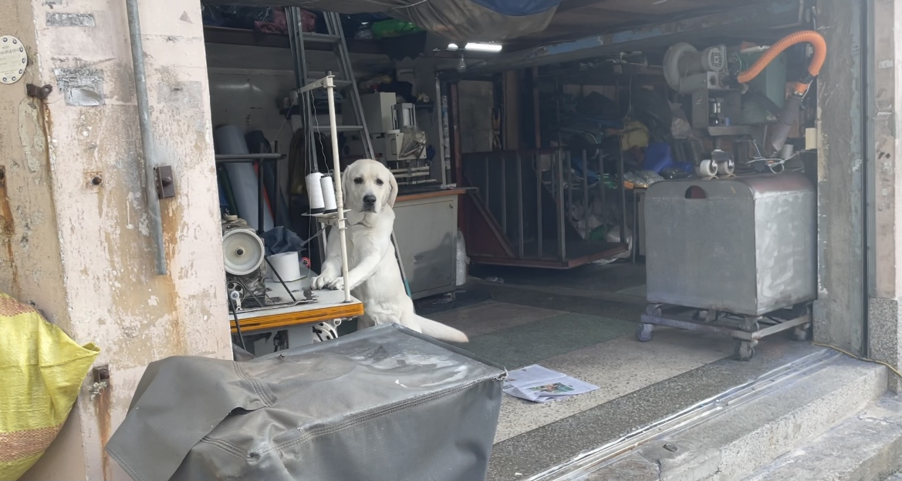
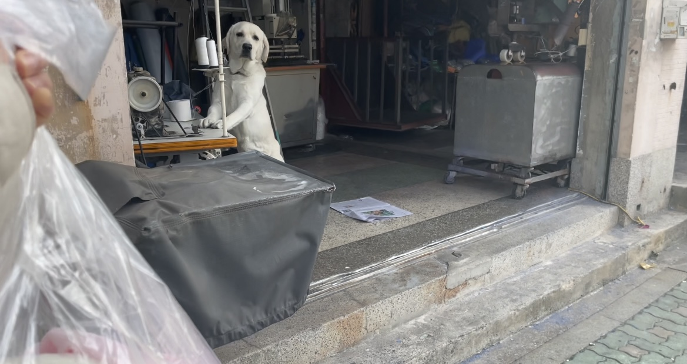
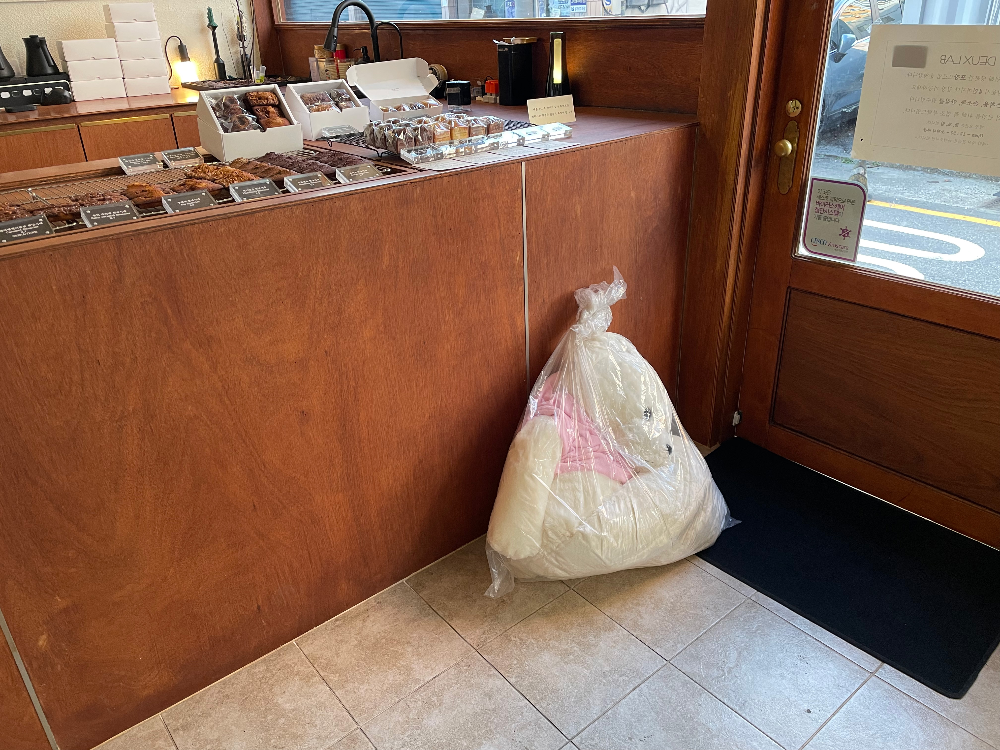

- 생색내기 좋은 곰인형
- 곰인형을 데리고 오면서
- 누구에게 생색을 낼 것인가
- 뉴턴공원
생색내기 좋은 곰인형을 발견한 나는 그를 만나기 위해 당근 거래를 했다.
생색내기 좋은 곰인형을 발견한 나는 그를 만나기 위해 당근 거래를 했다.
생색내기 좋은 곰인형을 발견한 나는 그를 만나기 위해 당근 거래를 했다.
생색내기 좋은 곰인형을 발견한 나는 그를 만나기 위해 당근 거래를 했다.
생색내기 좋은 곰인형을 발견한 나는 그를 만나기 위해 당근 거래를 했다.
생색내기 좋은 곰인형을 발견한 나는 그를 만나기 위해 당근 거래를 했다.
  
 

당근이신가요?
생색내기 좋은 곰인형이라는 것이 따로 있는 것인가?


좋은 곰인형을 만나고 오는길 나는 어딘가 극단적인 라멘 가게에 들어왔다.
 



강아지가 많은 관심을 보였다.

디저트를 포장하러 왔다. 곰돌이가 생각보다 육중해서 잠시 숨을 돌렸다.

인스타 감성 곰돌이와 이 곰돌이의 차이는 무엇일까?